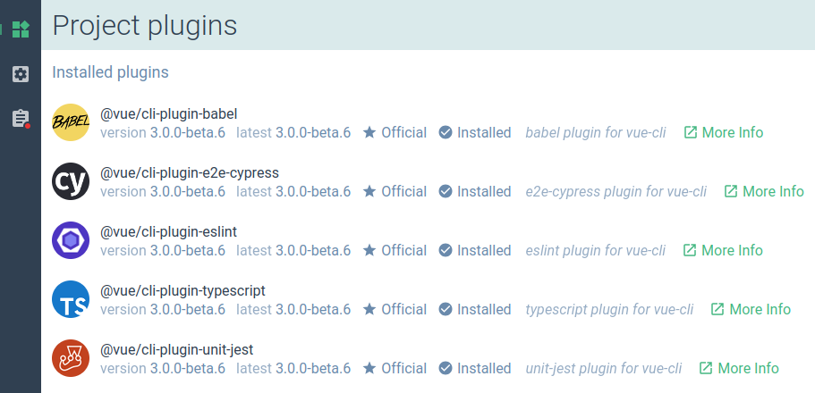
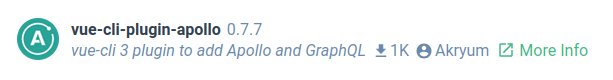

# UI 插件信息
你的插件在其 UI 中使用时，可以展示不同的附加信息，使其更容易被发现和辨认。
# Logo
你可以在将要发布到 npm 上的目录的根上放置一个 logo.png。它会展示在以下几个地方：
- 搜索插件以安装时
- 在已安装的插件列表中

这个 logo 应该是一个不透明的正方形图 (最好 84x84).
# 可发现性
为了提升你的插件在搜索时的可见度，请将描述插件的关键字放到插件的 package.json 文件的 description 字段。
示例：
{
"name": "vue-cli-plugin-apollo",
"version": "0.7.7",
"description": "vue cli plugin to add Apollo and GraphQL"
}
你应该将插件网站的 URL 或仓库添加添加到 homepage 或 repository 字段，这样“More Info”按钮就会在你的插件描述中展示出来。
{
"repository": {
"type": "git",
"url": "git+https://github.com/Akryum/vue-cli-plugin-apollo.git"
},
"homepage": "https://github.com/Akryum/vue-cli-plugin-apollo#readme"
}
